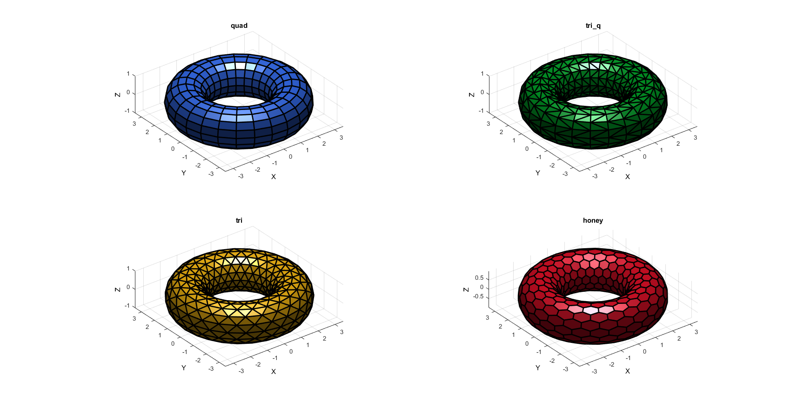

patchTorus
Below is a demonstration of the features of the patchTorus function
Contents
clear; close all; clc;
Plot settings
fig_color='w'; fig_colordef='white'; fontSize=10; faceColor='b'; faceAlpha=1; edgeColor='k'; edgeWidth=2; markerSize=25;
Building a mesh of a torus
%Torus parameters np=100; r=1; %Sphere radius rc=2.5; %Central radius nr=16; nc=25; patchTypes={'quad','tri_q','tri','honey'}; % Open figure for plotting hf=figuremax(fig_color,fig_colordef); %Plot the various mesh types pColors=autumn(4); for q=1:1:4; [F,V]=patchTorus(r,nr,rc,nc,patchTypes{q}); subplot(2,2,q); hold on; title([patchTypes{q}],'FontSize',fontSize,'Interpreter','none'); xlabel('X','FontSize',fontSize); ylabel('Y','FontSize',fontSize); zlabel('Z','FontSize',fontSize); hp=patch('Faces',F,'Vertices',V); % [hn]=patchNormPlot(F,V,0.3); set(hp,'FaceColor',pColors(q,:),'FaceAlpha',faceAlpha,'lineWidth',edgeWidth,'edgeColor',edgeColor); camlight headlight; set(gca,'FontSize',fontSize); view(3); axis tight; axis equal; grid on; end

GIBBON www.gibboncode.org
Kevin Mattheus Moerman, gibbon.toolbox@gmail.com